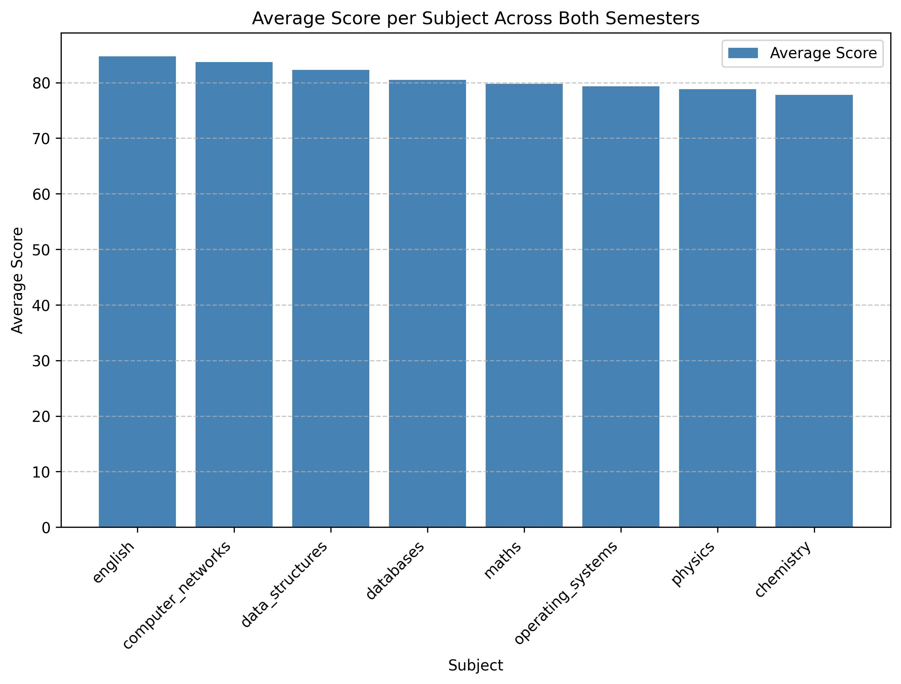

Date: February 18, 2026
Prepared by: AnalyticsAI
Collectively, these insights point to subject‑specific strengths, a broad achievement spread, and high internal consistency between math‑related competencies, while also flagging data reliability concerns for semester‑level comparisons.
This report synthesizes a snapshot of academic outcomes for a cohort of ten students across two semesters and eight subjects (four per semester). The analysis draws exclusively from pre‑computed aggregates (averages, rankings, distributions, correlation, and a bar chart) supplied in the source summaries.
Purpose – To surface performance patterns, identify high‑ and low‑performing segments, and uncover relationships that can inform curriculum planning, student support, and further analytical work.
Scope & Methodology – All figures originate from the provided statistical summaries; no raw score data were accessed. Calculations such as averages, rankings, and Pearson correlation were pre‑computed. Visualisation is limited to a single bar chart that ranks subjects by average score.
Limitations –
- Inconsistent semester‑level totals: one summary reports a decline (‑4.7 points) while another reports a gain (+4.7 points).
- Missing lower‑range distribution data (0‑200, 201‑400) prevents a full view of the performance spectrum.
- No demographic or contextual variables (e.g., attendance, prior GPA) are available to explain observed patterns.
The mean combined total across all eight subjects is 646.9 points per student. This aggregate benchmark serves as a reference point for evaluating individual and subgroup outcomes against the cohort baseline.
Semester 1:
- Mathematics 79.8, Physics 78.8, Chemistry 77.8, English 84.7.
- English emerges as the strongest discipline, while Chemistry trails.
Semester 2:
- Data Structures 82.3, Databases 80.5, Operating Systems 79.3, Computer Networks 83.7.
- Computer Networks leads the second‑semester suite; Operating Systems records the lowest average.
Combined View (Bar Chart)

Chart: Average scores for each subject across both semesters, ordered from highest to lowest.
The chart reinforces the textual ranking: English (84.7) > Computer Networks (83.7) > Data Structures (82.3) > Databases (80.5) > Maths (79.8) > Operating Systems (79.3) > Physics (78.8) > Chemistry (77.8).
The performance spread of ~ 160 points suggests notable heterogeneity in learning outcomes.
The concentration of students in the 601‑800 bracket indicates a generally above‑average cohort, yet the lack of lower‑range data hampers a complete distributional assessment.
A Pearson correlation of 0.998 between Maths (Semester 1) and Data Structures (Semester 2) signifies an extremely strong positive linear relationship. Students who excel in quantitative reasoning tend to replicate that success in programming concepts.
The contradictory figures prevent a definitive statement on whether overall performance improved or declined between semesters. This discrepancy should be investigated (e.g., verify calculation bases, sample consistency).
Priority 1 – Resolve Semester‑Level Data Conflict
- Description: Conduct a data audit to reconcile the divergent average‑total figures (‑4.7 vs. +4.7 points). Verify calculation formulas, student inclusion criteria, and any weighting differences.
- Rationale: Accurate trend analysis is essential for strategic planning; conflicting data undermines confidence in any semester‑to‑semester conclusions.
- Expected Impact: Clear, reliable metrics will enable evidence‑based decisions on curriculum pacing and resource distribution.
Priority 2 – Strengthen Underperforming Subjects
- Description: Deploy focused faculty development and supplemental learning resources for Chemistry and Operating Systems (e.g., labs, tutoring, revised assessments).
- Rationale: These subjects consistently record the lowest averages, dragging down overall cohort performance.
- Expected Impact: Incremental improvements (2‑4 percentage points) could lift the cohort’s combined average by ~5‑10 points.
Priority 3 – Implement Tiered Academic Support
- Description: Create a two‑track support system: enrichment programs for top‑performers (advanced projects, research opportunities) and remedial workshops for bottom‑quartile students identified via the combined‑mark distribution.
- Rationale: The 160‑point spread signals divergent learning needs that a uniform approach cannot address.
- Expected Impact: Reduce the performance gap by at least 20 points, elevating the bottom‑5 average toward the cohort mean.
Priority 4 – Leverage Math Foundations for CS Success
- Description: Integrate math‑focused preparatory modules into the Data Structures and broader computer‑science curriculum, emphasizing analytical problem‑solving.
- Rationale: The 0.998 correlation suggests that strengthening math skills will directly boost programming outcomes.
- Expected Impact: Anticipated uplift of 3‑5 points in Data Structures averages for students currently below the math median.
Priority 5 – Expand Data Capture for Full Distribution
- Description: Collect and incorporate marks for the 0‑200 and 201‑400 intervals in future reporting cycles.
- Rationale: Complete distributional data are necessary to identify and support at‑risk learners.
- Expected Impact: Early detection of low‑performing students, enabling timely interventions and improving retention.
The analysis paints a picture of a generally high‑performing cohort, driven by strong results in English, Computer Networks, and Data Structures, yet tempered by noticeable subject‑specific weaknesses and a wide achievement spread. The exceptionally high maths‑to‑programming correlation highlights a strategic leverage point for curriculum design. However, inconsistent semester‑level totals and missing lower‑range distribution data limit the robustness of temporal conclusions. Addressing these data gaps and implementing targeted academic support will enhance both overall performance and equity of outcomes across the student body.